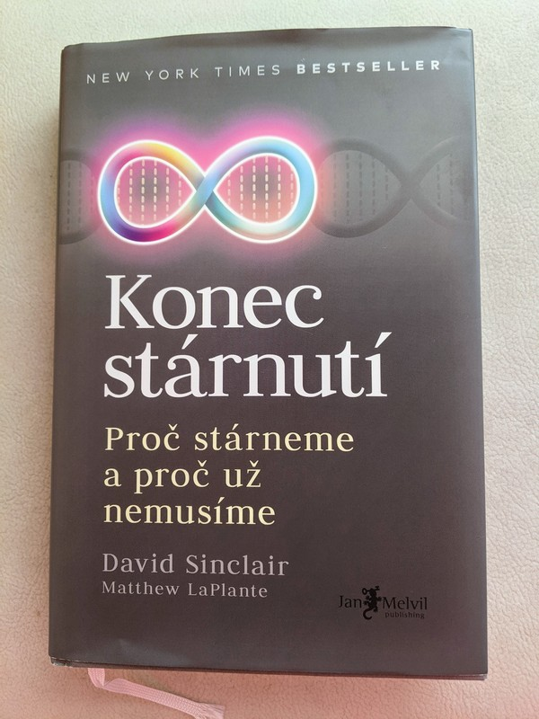
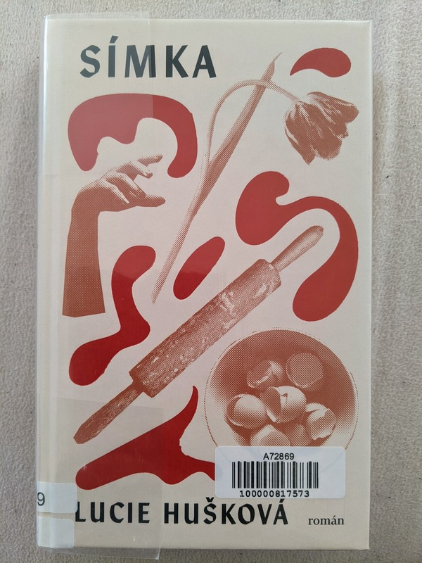
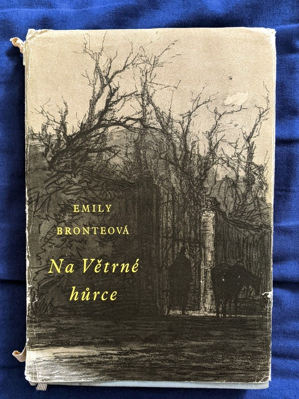

Čtvrt roku uplynulo zase jako voda, a tak se hlásím s pravidelnou čtenářskou rubrikou. Budiž vám inspirací ;-)
David Sinclair, Matthew LaPlante - Konec stárnutí
Tuto knihu jsem dostala už k předminulým Vánocům, ale nějak jsem na ni stále neměla chuť a došlo na ni tedy až nyní. Tak trochu jsem se obávala, že bude až moc vědecká a vlastně jsem měla z části pravdu - ze všech Mellvilovek, s nimiž jsem se zatím setkala, byla tato čtenářsky asi nejméně přístupná (minimálně její první část, popisující biologické pochody v těle). Na druhou stranu je na knize fascinující, s jakým optimismem autor hledí do budoucnosti, pevně přesvědčený o tom, že lidé se již brzy budou dožívat mnohem vyššího věku a v mnohem lepší fyzické kondici. Celá kniha je totiž postavena na tvrzení, že stárnutí je nemoc, kterou lze léčit. Ať už profesoru Sinclairovi budeme věřit či ne, Konec stárnutí přináší spoustu fascinujících vědeckých poznatků a objevů i ryze praktických tipů, které může do svého životního stylu zařadit prakticky každý. Mé dojmy z knihy jsou však přesto trochu smíšené. Možná se k ní ještě někdy vrátím a v jiném rozpoložení si z ní možná odnesu víc.

Lucie Hušková - Símka
Símka na mne takhle jednou vykoukla z regálu “naší” městské knihovny. Obvykle oddělením pro dospělé jenom tak rychle propluju, protože mám s sebou vždy O. neomylně směřujícího do dětské sekce, takže knížka si vlastně našla spíš mne, než že bych si já našla ji :) Co mě na ní ale zaujalo především je to, že znám její autorku, která se tenkrát před lety stejně jako já podílela na projektu Ligy lidských práv " Hrdinou může být každý". Símka je jejím literárním debutem a musím říct, že velice zdařilým. Kniha vypráví příběh toxického vztahu mezi matkou a dcerou. Je rozdělena na dvě části, kdy jedna je Símčinou vzpomínkou na její dětství prožité v domě prarodičů a druhou vypráví již jako dospělá žena, která prožívá první pokus o osamostatnění se od své emočně labilní matky. Její životní plány však citelně nabourává matčina náhlá vážná nemoc, která ji staví před nejedno důležité rozhodnutí… Símka se čte doslova jedním dechem, druhou polovinu jsem zhltla téměř na posezení, jak jsem byla zvědavá, jak to s ní dopadne. Símce jsem celou dobu moc fandila a přála jsem si pro ni nějaký happy end, i když jsem tušila, že takhle prvoplánově to rozhodně neskončí. Nebudu vám ale nic spoilovat :) Každopádně myslím, že na takový debut může být autorka právem pyšná a já se už teď moc těším na její další tituly!

Emily Bronteová - Na Větrné hůrce
Tak jsem zase jednou sáhla po staré dobré klasice a musím říct, že jsem zpočátku byla z postav a jejich chování trochu v šoku - čekala jsem nějakou romantiku typu Jany Eyrové a ono to bylo čtení drsné a pochmurné asi jako kulisy, do nichž je děj románu zasazen. Působivou atmosféru mému vydání z roku 1960, které mám po pratetě, ještě dodaly vyloženě depresivní ilustrace Zdeňka Brdlíka. Mé pocity z románu jsou trochu smíšené, každopádně mě příběh hned na začátku vtáhl a nepustil - že bych ho ale musela číst znovu, tak to opravdu ne. Místy jsem konání jednotlivých postav moc nepobírala (v tomto směru na díle asi trochu zapracoval zub času) a krom služebné Nelly - hlavní vypravěčky příběhu - jsem vlastně žádné postavě knihy nijak zvlášť nefandila. Možná potřebujete mít ke čtení Větrné hůrky jen správné naladění, kdo ví. Ve mně ale toto dílo klasické literatury bohužel nezanechalo nějaké hlubší pocity, které by mě přiměly se ke knize ještě někdy v budoucnu vrátit.
